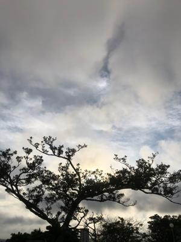
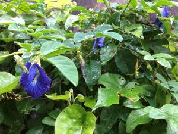

うるがいの話 ある日
最新: 接客態度【うるがいの話 ある日】とは 一日だけのプログです
『うるがいの話』の最新一日だけのプログで、通信料が少なく経済的だ。カニの画像をクリックすると全ての日付が載る『うるがいの話』サイトを表示します
|
|
【うるがいの話】 うるがい(ｳﾙｶﾞｲ urugai)とは、『もずくがに』の名前でとても大きくなります。 |
|---|---|
|
|
【カミマヤーの話】 猫のことを方言でマヤーといいます。カミマヤー（kamimayaa）とは、神の猫のことです。 |
|
【たながぁの音楽】 たながぁ（ﾀﾅｶﾞｰ tanagaa）とは手長えびのことで、何種類かあり大きいのは車 エビぐらいになります。 |

|
【ぶながぁの話】 ぶながぁ(ﾌﾞﾅｶﾞｰ bunagaa)とは、赤い髪の毛、赤い身体、そして身長は１ｍ２０ｃｍ ぐらい、川の蟹を食べているの目撃された。場所は沖縄県国頭郡大宜味村のと ある村僕の隣近所に住んでいる爺さんから、聞いた話です。 |
|
|
【ギーマの話】 ギーマ(giima)とは、山原の里山に咲くスズランに似た、 花を付けます。実は食べられます、 気が付くと口の周りが紫になっています。 |
2022年05月30日 (月）接客態度
15:55
 
とある銀行で通帳を使って預け入れをすると、通帳繰り越しをしてくださいと
音声でガイダンスされた。繰り越しはこの店舗では窓口で行分ければならず待
ち番号を印刷し待つ。既に、店舗の窓口には行員二人が対応、奥にに責任者が
一人。窓口には、すでに２名手続きをしている、そして番号待ちが私を含め３
人。後ろでＡＴＭから、通帳繰り越しをしてくださいとガイダンスが聞こえる
しばらくして、オジーが窓口へ通帳を持ってウロウロ行員を捜す。すると奥に
いた、エライ行員が番号を採って待ってくださいとオジーを突き放す。オジー
大丈夫だけと、オジーをみると外へ出て行った。ま、諦めたかと、ところが暫
くすると店舗に入って入口にたたずんでいる。大丈夫ですか、番号は採りまし
たかと声をかける。オジーは私の後の番号を見せた、あ、私の次です。しばら
くすると前の席が空き、オジーが那覇市の自動車税支払いの封筒を持っていた
ので、すでにかなり待った私は、自動車税の支払いですか、延滞していなけれ
ば隣にあるコンビニが速いですヨとアドバイスする。話が通じていなかったよ
うだ、『コドモのものです、前は大道で処理していたのですが、こっちは遠く
て、この前、運転免許を返納したため、歩いてこなければならない』、免許
はいつ延納されましたかと尋ねると、『一か月前、車がないと・・、暫くは歩
くと足が痛かったが、最近は慣れたよと（ナゼか足を見せた）』、失礼ですが
お歳は、『８６才、ところで通帳繰り越しはお金必要かね』、いいえ私も繰り
越しをするため待っているのですが、無料ですよと話ている間に、待ち番号の
合図がした。ではお先にと、オジーに声を掛け席は後にした。２０分の待ち時
間だった。それにしても、ここの行員は接客よくないと毎度ながら感じる。次
回の通帳繰り越しは、自動機がある遠くの店舗でやる事に決める。
１５時３２分 ビットコインの総資産 ￥１１、２４５↑